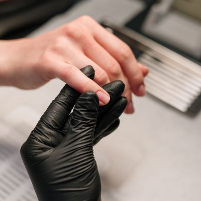
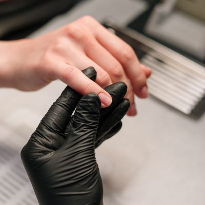

Scheduling an appointment
1.Select the service you need and want: Before scheduling the appointment, decide what type of nail service you require. It could be a manicure, pedicure, acrylic nail application, gel polish, or other services available at the salon. Make sure you know exactly what service you want to communicate it clearly during the appointment.
2.Choose the date and time: Consider your own availability and choose a date and time that suits you. Keep in mind that some services may require more time than others, so make sure to book the appropriate amount of time.
3.Select the specialist you want to attend to you: You have a preference for a particular specialist, you can request them when scheduling the appointment. If you don't have any preference, the salon will generally assign an available specialist for the selected time slot.
Once you have selected the date, time, and specialist, confirm your appointment. If you are calling over the phone, provide your name, phone number, and appointment details to the salon staff. If you are using an online booking system, follow the indicated steps to complete the reservation. Make sure to receive a confirmation of the appointment, either verbally or via email.